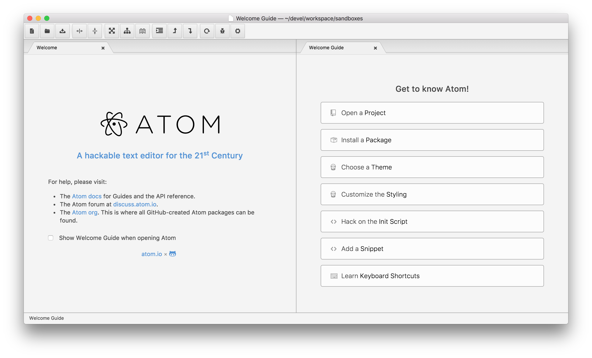

Web 01
lukas.orgovan@ness.com
michal.vanko@ness.com
Web 01
- Inštalácia prostredia, Chrome, Atom
- Web a protokoly
- Webové zdroje
- HTML, CSS
- Štruktúra stránky
Downloads
- Chrome - http://bit.ly/1yE8rmH
- Atom - https://atom.io/
Atom
Atom - úvodná obrazovka
http://flight-manual.atom.io
Atom - práca v projekte
Atom - folding
Atom - zmena témy
Atom - nastavenia
Atom - nastavenie TAB
Atom - pluginy
Atom - pluginy
- minimap
- pigments
- tool-bar
- toolbar-almighty
Atom - kde som?
Atom - tree view [CTRL + \]

Atom - find in project [SHIFT + CTRL + f]
Atom - find file [CTRL + p]
Chrome
Chrome - DevTools [F12]
Chrome - Sources, console
Chrome - Network
Chrome - Find in resources
Chrome - Find in resource
Chrome - Find resource
WEB
Pár všeobecných pojmov
- Zdroj (resource)
- Klient (client, browser)
- Server (server, host)
- URL, URI (Uniform Resource Locator, Identifier)
- HTTP, HTTPs (HyperText Transfer Protocol)
- API (Application programming interface), backpoint
Frontend a backend
- Frontend - množina zdrojov zaslaná serverom do prehliadača a spracovaná lokálne na zariadení užívateľa
- Backend - množina zdrojov spracovaná na serveri
HTTP(s)

HTTP komunikácia

AJAX
Asynchronous JavaScript + XML

Čo popisuje URL

Cesty (paths)
Relatívne
- index.html
- /img/image.png
- ../img/ikonka.gif
Cesty (paths)
Absolútne
- http://www.stranka.sk
- http://www.stranka.sk/img/image.png
- https://www.stranka.sk/img/ikonka.gif
- //www.stranka.sk/img/ikonka.gif
Prehľad webových zdrojov pre frontend
- html
- css
- js
- gif, png, jpg, webp, svg, ico..
- woff, eot, svg, ttf
- mp3, mp4, wav, webm, ogg..
- json, xml, txt, html..
HTML tag
CSS rule
CSS selektory
- element – a {}
- id - #help {}
- class - .engine {}
Druhy zápisu CSS a priorita
- browser default style
- externé CSS - <link rel="stylesheet" href="css/style.css" />
- interné CSS - <style>a {color: #000;}</style>
- inline CSS - <div style="color: #000">
Štruktúra HTML5

Typická štruktúra
<!DOCTYPE html>
<html lang="en">
<head>
<meta charset="UTF-8">
<title>Moja stránka</title>
<meta name="viewport" content="width=device-width, initial-scale=1">
<link rel="stylesheet" href="css/style.css" />
<script src="js/library.js"></script>
</head>
<body>
<header>
<h1>Moja stránka</h1>
</header>
<nav>...</nav>
<section>...</section>
<article>...</article>
<aside>...</aside>
<footer>...</footer>
<script src="js/app.js"></script>
</body>
</html>